ContactForceN_ViscoElasticLinear class
Contents
Description
This is a sub-class of the ContactForceN class for the implementation of the Linear Visco-Elastic normal contact force model.
This model assumes that the normal contact force has an elastic 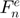 and a viscous 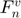 component, provided by a linear spring and dashpot, respectively.
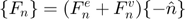
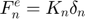
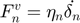
The stiffness coefficient 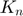 can be computed by 3 different formulas, if its value is not provided:
- Equivalent energy:
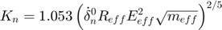
- Equivalent overlap:
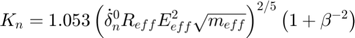
- Equivalent time:
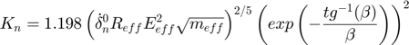
The damping coefficient 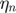 is computed with the following formula, if its value is not provided:

Notation:
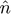: Normal direction between elements
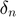: Normal overlap
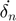: Time rate of change of normal overlap
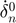: Time rate of change of normal overlap at the impact moment
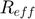: Effective contact radius
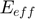: Effective Young modulus
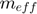: Effective mass
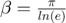, where e is the normal coefficient of restitution
References:
classdef ContactForceN_ViscoElasticLinear < ContactForceN
Public properties
properties (SetAccess = public, GetAccess = public)
% Formulation options
stiff_formula uint8 = uint8.empty; % flag for type of stiffness formulation
remove_cohesion logical = logical.empty; % flag for removing artificial cohesion
end
Constructor method
methods
function this = ContactForceN_ViscoElasticLinear()
this = this@ContactForceN(ContactForceN.VISCOELASTIC_LINEAR);
this = this.setDefaultProps();
end
end
Public methods: implementation of super-class declarations
methods
%------------------------------------------------------------------
function this = setDefaultProps(this)
this.stiff_formula = this.ENERGY;
this.remove_cohesion = true;
end
%------------------------------------------------------------------
function this = setCteParams(this,int)
% Needed properties
r = int.eff_radius;
m = int.eff_mass;
y = int.eff_young;
v0 = abs(int.kinemat.v0_n);
e = this.restitution;
beta = pi/log(e);
% Stiffness coefficient
switch this.stiff_formula
case this.ENERGY
this.stiff = 1.053*(v0*r*y^2*sqrt(m))^(2/5);
case this.OVERLAP
this.stiff = 1.053*(v0*r*y^2*sqrt(m))^(2/5) * (exp(-atan(beta)/beta))^2;
case this.TIME
this.stiff = 1.198*(v0*r*y^2*sqrt(m))^(2/5) * (1+beta^(-2));
end
% Damping coefficient
if (isempty(this.damp))
this.damp = sqrt(4*m*this.stiff/(1+beta^2));
end
end
%------------------------------------------------------------------
function this = evalForce(this,int)
% Needed properties
dir = int.kinemat.dir_n;
ovlp = int.kinemat.ovlp_n;
vel = int.kinemat.vel_n;
k = this.stiff;
d = this.damp;
% Force modulus (elastic and viscous contributions)
f = k * ovlp + d * vel;
% Remove artificial cohesion
if (f < 0 && this.remove_cohesion)
f = 0;
end
% Total tangential force vector (against deformation and motion)
this.total_force = -f * dir;
end
end
end